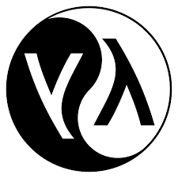

R语言基础
面向非程序员的R基础教程
2025-08-15
我的回答
我是谁
我从哪里来
- “我”已经可以/不可以熟练使用R/Excel/SPSS/…
我要去哪里
在本教程中
你大概率不会用到笔记本电脑💻
你大概率不需要记笔记📖
当然如果你用笔记本记笔记我是很高兴的
 关于R语言
关于R语言
R是一门用于统计计算和作图的语言，受S语言和Scheme语言影响发展而来。
S语言是一门用于数据分析和图示的高层语言。基于S语言开发的商业软件Splus，在外国学术界应用很广。 Scheme语言是LISP语言的一个方言(或说成变种)
R语言最初由新西兰奥克兰大学统计系的Robert Gentleman和Ross Ihaka合作编写。
R语言具有免费、开源及统计模块齐全的特征，已被国外大量学术和科研机构采用，其应用范围涵盖了诸多领域。
在遇到R之前
你一定见过其他统计分析软件
 SAS: 速度快，有大量统计分析模块，可扩展性稍差，昂贵。
SAS: 速度快，有大量统计分析模块，可扩展性稍差，昂贵。
 SPSS: 复杂的用户图形界面，简单易学，但编程十分困难。
SPSS: 复杂的用户图形界面，简单易学，但编程十分困难。
Splus: 运行S语言，具有复杂的界面，与R完全兼容，昂贵。
 Origin: 无需编程基础，图表样式丰富，但定制化分析较为困难。
Origin: 无需编程基础，图表样式丰富，但定制化分析较为困难。
 Excel: 微软出品，功能强大，图形化界面易上手，但学习曲线比较陡峭，昂贵。
Excel: 微软出品，功能强大，图形化界面易上手，但学习曲线比较陡峭，昂贵。
为什么选择R？
🧩 广阔的应用领域
🗺️ 丰富的资源（R包），良好的扩展性
❓ 完备的帮助系统，大量详尽的文档
💳 开源！GNU软件：大概率免费
🧩 广阔的应用领域
Statistical & Data Science 统计和数据科学领域
IT Sector 信息技术领域
Finance 金融领域
E-commerce 电子商务领域
Life Science and Healthcare 生命健康领域
Manufacturing 工业生产领域
……
Statistical & Data Science 统计和数据科学领域
“I keep saying that the sexy job in the next 10 years will be statisticians and, I’m not kidding.” Chief Economist at Google says.
R首先是一种统计学研究工具
R也常被用来进行机器学习和人工智能相关研究
真实世界中应用R的科研机构
Cornell University 康奈尔大学（全美Top20）使用R作为统计计算的首选语言
UCLA 加利福尼亚大学洛杉矶分校（全美Top5）使用R作为统计计算的教学语言
Statistical & Data Science 统计和数据科学领域
Tidyverse ecosystem

Statistical & Data Science 统计和数据科学领域
Tidymodels ecosystem

IT Sector 信息技术领域
真实世界中应用R的IT公司
Microsoft 微软
使用R作为Azure机器学习平台的统计引擎
开发了R-open作为高效数学计算的R发行版
Google 谷歌
使用R来改善搜索结果，提供个性化广告推荐
Finance 金融领域
R为金融工作和计算提供了先进的统计学套件，包括自动回归，时间序列分析，股票市场模型，金融数据挖掘，量化分析，下游风险评估等等。
真实世界中应用R的金融公司
Lloyds of London 劳合社是全球最为知名的特殊保险与再保险市场
Bajaj Allianz Insurance 巴贾杰安联保险公司
Finance 金融领域
股票和量化分析

Life Science and Healthcare 生命健康领域
R在药物发现，生物信息学，流行病学和公共卫生领域都有着大量应用
真实世界中应用R的生物制药公司
Merck: 默克集团
使用R进行临床试验设计评估和药物设计
Life Science and Healthcare 生命健康领域
Covid-19 Map by Johns Hopkins

Life Science and Healthcare 生命健康领域
Covid-19 Map by YuLab-SUM using R nCov2019

接下来
别担心，还没到开始写代码
想要正常使用R，让我们先把R部署到你的电脑上
把大象放进冰箱里需要几步？

如何安装 R
点击Download for Windows进入R for Windows页面
点击install R for the first time进入下载页面
点击Download R 4.1.0 for Windows下载安装包
安装
让我们先来聊聊这个安装包的名字:
“R 4.1.0”
软件的持续开发与部署

软件的持续开发意味着多次发布
多次发布之间需要有版本号进行区别
但是仅仅区分版本号还不够，如何快速分辨软件的依赖关系呢？
语义化的版本控制
假设有个名为”救火车”的软件，它依赖于另一个名为”梯子”并已经有使用语义化版本控制的软件。当救火车创建时，梯子的版本号为 3.1.0。因为救火车使用了一些版本 3.1.0 所新增的功能，你可以放心地指定依赖于梯子的版本号大于等于 3.1.0 但小于 4.0.0。这样，当梯子版本 3.1.1 和 3.2.0 发布时，你可以将直接它们纳入你的包管理系统，因为它们能与原有依赖的软件兼容。
再回来看”4.1.0”
4: 代表重大版本更新
1: 代表小版本更新
0: 代表错误修复
版本别名
除了版本号之外，每个R发布的版本都还会有一个别称
所有的版本别名都来自美国漫画连载《Peanuts》的系列名字

下面是最近的几个R发行版的名字，感兴趣可以自行检索
4.1.0 “Camp Pontanezen” (original strip: 1986-02-12) (R version release data: 2021-05-18) 4.0.5 “Shake and Throw” (original strip: 1978-07-30) (R version release date: 2021-03-31) 4.0.4 “Lost Library Book” (original strip: 1959-03-02) (R version release date: 2021-02-15) 4.0.3 “Bunny-Wunnies Freak Out” (original strip: 1972-10-23) (R version release date: 2020-10-10) 4.0.2 “Taking Off Again” (original strip: 1962-04-14) (R version release date: 2020-06-22) 4.0.1 “See Things Now” (original strip: 1962-02-06) (R version release date: 2020-06-06) 4.0.0 “Arbor Day” (original strip: 1970-04-24) (R version release date: 2020-04-24)
在安装R时候的常见问题
我安装的R是3.5.3，那么在这个环境下开发的工具，能用在R 4.1.0吗？
我安装的R是4.1.0，那么在这个环境下开发的工具，能用在R 3.5.3吗？
我有必要更新到最新的R 4.1.0吗？
好了好了，我明白了版本号了，也装了合适的R了，该开始用R了吧？
One more thing
关于IDE
什么是IDE？
集成开发环境（Integrated Development Environment，IDE）是用于提供程序开发环境的应用程序，一般包括代码编辑器、编译器、调试器和图形用户界面等工具。
R的原生图形界面
功能基础，界面简陋，适合快速测试代码
RStudio - 最受欢迎的R IDE

RStudio的优势：
- 🎯 专为R语言设计，功能最完整
- 📊 内置数据查看器和可视化工具
- 📝 优秀的R Markdown支持
- 🔧 丰富的插件生态系统
- 🌐 支持Shiny应用开发
VS Code + R扩展 - 现代化的选择

VS Code-R的优势：
- ⚡ 轻量级，启动速度快
- 🔌 强大的扩展生态系统
- 🐍 多语言支持（R + Python + Julia等）
- 🎨 现代化的用户界面
- 🔄 优秀的Git集成
- 🖥️ 远程开发支持
Positron - 新兴的数据科学IDE
Positron by Posit（RStudio公司的新产品）

Positron的特点：
- 🆕 基于VS Code架构，但专为数据科学设计
- 🔬 原生支持R和Python
- 📈 内置数据查看和可视化功能
- 🚀 现代化的用户体验
- 🔮 代表数据科学IDE的未来方向
IDE选择建议
🎯 RStudio
适合： - R语言初学者 - 重度R用户 - 需要完整R生态的用户 - 学术研究人员
⚡ VS Code
适合： - 多语言开发者 - 追求轻量级工具的用户 - 需要远程开发的用户 - 已熟悉VS Code的开发者
🚀 Positron
适合： - 数据科学团队 - 同时使用R和Python的用户 - 追求现代化体验的用户 - 愿意尝试新工具的早期采用者
开始使用R
好了好了，知道是个好东西了，让我们赶紧来开始用R吧

首先，来编写可执行的R代码
# 一个无聊的回归模型
fit = lm(dist ~ 1 + speed, data = cars)
coef(summary(fit))
# Estimate Std. Error t value Pr(>|t|)
# (Intercept) -17.579095 6.7584402 -2.601058 1.231882e-02
# speed 3.932409 0.4155128 9.463990 1.489836e-12
dojutsu = c('地爆天星', '天照', '加具土命', '神威', '須佐能乎', '無限月読')
grep('天', dojutsu, value = TRUE)
其次，还可以画图
library(tidyverse)
data(cars)
cars %>% ggplot(aes(x = speed, y = dist)) +
geom_point() +
geom_line()
还可以画地图
library(leaflet)
leaflet() %>% addTiles() %>% setView(-93.65, 42.0285, zoom = 17)
还可以画表格
DT::datatable(
head(iris, 4),
fillContainer = FALSE, options = list(pageLength = 8)
)
文档编写的革命
从传统文档到现代化科学写作
让我们探索R生态系统中的文档编写工具
什么是 Markdown?
Markdown 是一种轻量级标记语言，创始人为 John Gruber。它允许人们「使用易读易写的纯文本格式编写文档，然后转换成有效的 XHTML（或者 HTML）文档」。 from 维基百科
Markdown的核心理念
- 📝 内容与样式分离：专注于内容创作，而非格式调整
- 🔄 跨平台兼容：一次编写，多处发布
- 🚀 简单易学：几分钟即可掌握基本语法
为什么选择Markdown而非Word？
📄 传统Word文档的痛点
- 🐌 格式调整耗时费力
- 💥 版本兼容性问题
- 🔒 专有格式，依赖特定软件
- 📊 难以集成代码和数据
- 🔄 协作困难，版本管理混乱
✨ Markdown的优势
- ⚡ 快速编写，专注内容
- 🌐 纯文本格式，永不过时
- 🔧 可编程，支持自动化
- 📈 完美集成代码和图表
- 🤝 Git友好，协作无忧
R Markdown - 科学写作的利器 
R Markdown = Markdown + R代码 + 输出格式
Quarto - 下一代科学出版系统

Quarto是什么？
- 🆕 新一代：R Markdown的继任者
- 🌍 多语言：支持R、Python、Julia、Observable JS
- 🎯 统一平台：一个工具，多种用途
- 🚀 现代化：更好的性能和用户体验
R Markdown vs Quarto 对比
| 🎯 主要语言 |
R |
R + Python + Julia + JS |
| 🏗️ 架构 |
基于knitr + pandoc |
原生pandoc集成 |
| 📊 输出格式 |
丰富但分散 |
统一且现代化 |
| 🎨 主题系统 |
有限的自定义 |
强大的主题引擎 |
| 📱 响应式设计 |
基础支持 |
原生响应式 |
| 🔧 扩展性 |
通过R包 |
内置扩展系统 |
| 🚀 性能 |
依赖R生态 |
优化的渲染引擎 |
何时选择哪个工具？
📊 选择 R Markdown 当你：
- 🎯 主要使用R语言
- 📚 需要特定的R包功能
- 🏢 团队已有R Markdown工作流
- 📖 制作传统的报告和文档
- 🔄 需要与现有R Markdown项目兼容
🚀 选择 Quarto 当你：
- 🌍 使用多种编程语言
- 🎨 需要现代化的设计
- 📱 制作响应式网站
- 📊 创建交互式仪表板
- 🔮 希望使用最新技术
实际应用场景
📈 数据分析报告
- 自动化的数据处理和可视化
- 可重复的分析流程
- 动态更新的图表和表格
📚 学术论文和书籍
- 集成参考文献管理
- 数学公式和代码展示
- 多格式发布（PDF、HTML、Word）
🎯 商业演示和仪表板
现代化文档编写工具推荐
📝 Typora
所见即所得 - 实时预览 - 简洁界面 - 数学公式支持 - 收费，不再推荐
🌐 语雀
 团队协作 - 在线编辑 - 知识库管理 - 团队共享
团队协作 - 在线编辑 - 知识库管理 - 团队共享
🎯 Notion
全能工作台 - 数据库功能 - 模板系统 - 多媒体支持
💻 VS Code
 开发者首选 - 强大扩展 - Git集成 - 多语言支持
开发者首选 - 强大扩展 - Git集成 - 多语言支持
让我们开始实践
从R Markdown开始你的科学写作之旅
让我们来看看如何创建你的第一个动态文档
创建R Markdown文档
从菜单 File -> New File -> R Markdown -> Document 填写作者和标题，创建一个新文档；
编译文档
点击 Knit 按钮编译文档；
恭喜你成功地制作了一份即时演算的Markdown文档！

当然它还很丑，如何美化它，那就是另一个的故事了
动态可重复文档解决方案
在数据分析过程中通常的处理流程如下：
需求定义->数据收集->数据转化->数据分析->数据可视化
而在需求快速变化的项目初期，为了快速确定需求，如何敏捷打造最小可用原型显然比项目工程化来得更有意义。
所以在现实中，这时候流程常常就会缩短成：
需求定义->数据整理->数据可视化
数据整理：R
数据可视化：Rmarkdown
再进一步
如果这个报告的输入也可以改变，所有的结果都适时地根据输入来显示
你是在说Shiny？
Shiny App

依赖成熟的框架，可以快速地构建动态shinyapp
flexdashboard

shinydashboard

已经开发的ShinyApp
maldiSNP
qctools
shinydose
最后，蟹蟹
本幻灯片由 Quarto 生成；
使得这一切变得可能的是 Quarto、knitr、以及 R Markdown。
主要参考资料：
- https://techvidvan.com/tutorials/r-applications/
- https://bookdown.org/yihui/rmarkdown/
- https://bookdown.org/yihui/rmarkdown-cookbook/
- https://www.coursera.org/learn/r-programming
 关于R语言
关于R语言


 SAS: 速度快，有大量统计分析模块，可扩展性稍差，昂贵。
SAS: 速度快，有大量统计分析模块，可扩展性稍差，昂贵。 SPSS: 复杂的用户图形界面，简单易学，但编程十分困难。
SPSS: 复杂的用户图形界面，简单易学，但编程十分困难。 Excel: 微软出品，功能强大，图形化界面易上手，但学习曲线比较陡峭，昂贵。
Excel: 微软出品，功能强大，图形化界面易上手，但学习曲线比较陡峭，昂贵。


 团队协作 - 在线编辑 - 知识库管理 - 团队共享
团队协作 - 在线编辑 - 知识库管理 - 团队共享 开发者首选 - 强大扩展 - Git集成 - 多语言支持
开发者首选 - 强大扩展 - Git集成 - 多语言支持